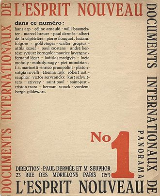

¨ESPIRITU¨
"Hay un espíritu nuevo; es un espíritu de construcción y de síntesis guiado por una concepción clara".
Frampton, Kenneth (2001). Le Corbusier. AKAL. p. 22. ISBN 978-84-46013068.
El espiritu nuevo , fue una importante revista de arte francesa, Su temática abarcaba un gran número de campos, con el purismo como eje, desde la discusión estética general a la arquitectura, pasando por la literatura, el teatro, el cine, la pintura, la escultura, la moda y el mobiliario, entre otros.
Nuestro espiritu nuevo es el cambio de paradigma a estos enlaces virtuales desde lo fisico y tangible al arte intangible, virtual y cosmopolita.
Desde este espacio virtual concretamos nuestro espacio personal con multiplicidad de elementos y multidimensional, desde la metafora de la casa como recinto primigenio de vida y la metafora del rizoma como elemento que va tejiendo las variables.
La casa expresa una forma de vida, expresa la estructura del habitar con todos sus aspectos físicos y psíquicos, es un sistema concretizado de actividades significativas que consta de lugares de diverso carácter que se afectan unos a otros. Hay formas de vida que privilegian las actividades sociales y hay casas con carácter más público (por ej.: las personas que residen juntas en una comunidad).
